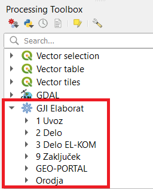
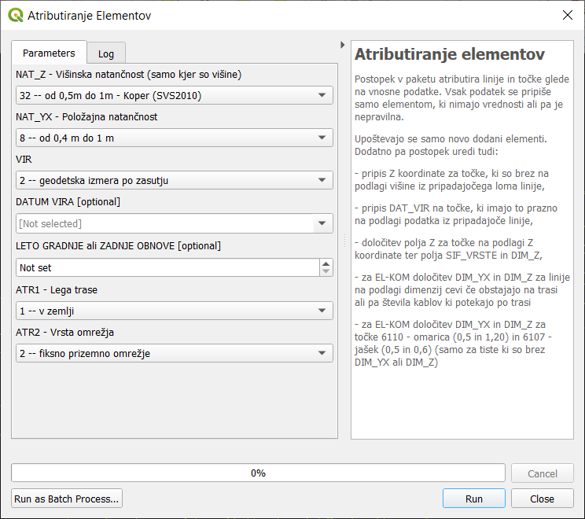
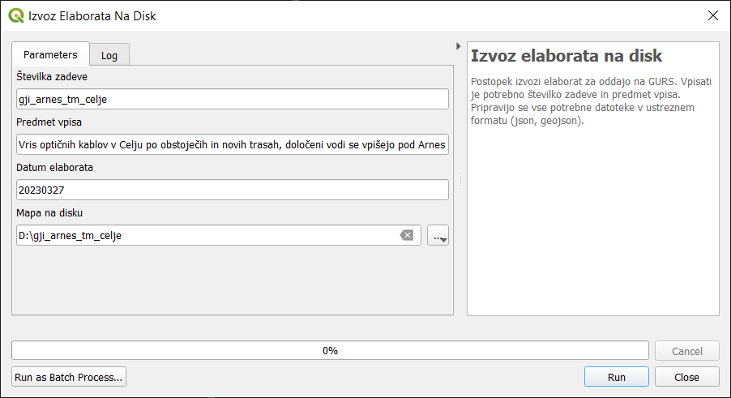
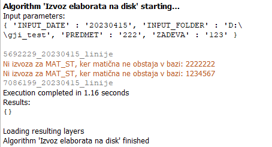
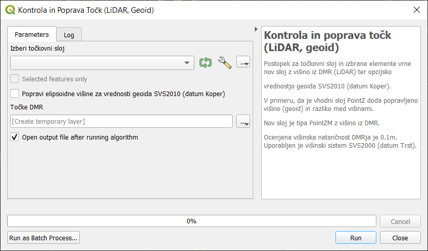

Orodja vtičnika
Orodja predstavljajo glavnino dela z vtičnikom in so dostopna preko menija kot skupina GJI ELaborat, ki je razdeljena na posamezne podskupine.

Processing Toolbox in GJI Elaborat
1 Uvoz
Orodja za uvoz podatkov v elaborat (skupina ELABORAT V PRIPRAVI). Ločimo tri vrste uvoza podatkov:
- Uvoz elaborata iz lokalne mape:
Uvozijo se vsi tipi sprememb (novi, spremenjeni, brisani) in vsi atributi iz lokalnih slojev.
Opomba
Mapa lahko vsebuje podatke v starem SHP formatu ali novem GeoJSON, vendar pa mora ena mapa vsebovati samo en format.
- Uvoz lokalnih slojev:
Najlažje je uvoziti lokalne sloje, ki so že v projektu. Možno pa je tudi izbrati pot do sloja na disku.
Uvoz novih 3D točk
Uvoz novih linij (2D ali 3D)
Uvoz višin za pripis 2D linijam
- Uvoz obstoječega stanja zbirnega katastra GJI v evidenci GURS glede na 3 načine:
FILTER (vnesemo atributni filter na podlagi katerega se izberejo in uvozijo elementi)
OBMOČJE (določimo pravokotnik kot območje uvoza)
RAZDALJA (določimo razdaljo v metrih od novo dodanih linij v elaboratu)
Opozorilo
Postopki uvoza podatkov GURS lahko trajajo več minut. Pri določitvi območja uvoza s pravokotnikom označite samo območje potrebno za izdelavo elaborata!
2 Delo
Orodja za paketno obdelavo podatkov, ki se že nahajajo v elaboratu:
Razbijanje linij na različne načine, kjer se atributi osnovne linije prenesejo na novo nastale z razbijanjem.
Snap obstoječih linij na nove
3 Delo EL-KOM
Orodja za paketno obdelavo podatkov elaborata elektronskih komunikacij:
Dodajanje cevi in kablov na različne načine
Generiranje hišnih priključkov
Preračun omrežja (network)
9 Zaključek
Atributiranje elementov
Orodje za paketno atributiranje elementov, ki so brez podatkov v določenih poljih in jim želimo vpisati enake podatke v enem koraku.

Atributiranje elementov za projekt elektronskih komunikacij
Dodatno pa postopek atributiranja izvede tudi naslednje obdelave podatkov:
pripis Z koordinate za točke, ki so brez višine na podlagi višine iz pripadajočega loma linije
pripis DAT_VIR na točke, ki imajo to prazno na podlagi podatka iz pripadajoče linije
določitev polja Z za točke na podlagi Z koordinate ter polja SIF_VRSTE in DIM_Z
za EL-KOM določitev DIM_YX in DIM_Z za linije na podlagi dimenzij cevi če obstajajo na trasi ali pa števila kablov ki potekajo po trasi
za EL-KOM določitev DIM_YX in DIM_Z za točke 6110 - omarica (0,5 in 1,20) in 6107 - jašek (0,5 in 0,6) (samo za tiste ki so brez DIM_YX ali DIM_Z)
Izvoz elaborata na disk
Izvoz podatkov za oddajo na GURS. Vpiše se številka zadeve in predmet vpisa, kar se shrani v bazi za kasnejše izvoze.

Pripravijo se vse potrebne datoteke v ustreznem formatu (GeoJSON in JSON).
Opomba
Izvoz omogoča kreiranje več elaboratov naenkrat, glede na vpisane matične številke upravljalcev za elemente (linije, točke, poligone) v polju MAT_ST.
To pomeni da lahko večji uporabniki (npr. komunalna podjetja), ki so izvajalci GJS na območju več različnih upravljavcev (občin), vodijo podatke v enem projektu in jih tudi v enem koraku izvozijo za oddajo na Gurs.
Potrebno je samo zagotoviti pravilen vnos matičnih številk.
Opozorilo
Izvozijo se samo elementi, ki imajo vpisan pravilen podatek o matični številki upravljavca. Če podatka ni, oz. če ne obstaja v evidenci poslovnih subjektov, se takšni elementi ne izvozijo.

Izvoz več elaboratov z opozorilom o neobstoječih matičnih številkah
Dodatno se vsem izvoženim elementom v bazi zapiše datum in čas izvoza.
GEO-PORTAL
Orodja za prenos podatkov na GEO-PORTAL in druge povezane akcije za določene naročnike, ki uporabljajo to storitev.
Orodja
Vsebuje orodja, ki niso neposredno povezana z elaboratom in se lahko uporabljajo tudi izven pripadajočega projekta za GJI.
Kontrola in poprava točk (LiDAR, geoid)
Za točkovni sloj izvede pripis višin iz Digitalnega modela reliefa (DMR), ki je bil generiran iz podatkov LiDAR in predstavlja najbolj natančne podatke o reliefu za celotno državo.
V primeru, da je vhodni sloj v 3D obliki (PointZ) izračuna tudi razliko med originalno višino in višino iz DMR.
Dodana je možnost preračuna višin na podatke geoida (SVS2010, datum Koper), v primeru da vsebuje vhodni sloj elipsoidne višine.

Pridobi višino posamezne točke iz DMR (LiDAR)
Kadar želimo hitro pridobiti višino poljubne točke, lahko uporabimo to orodje.